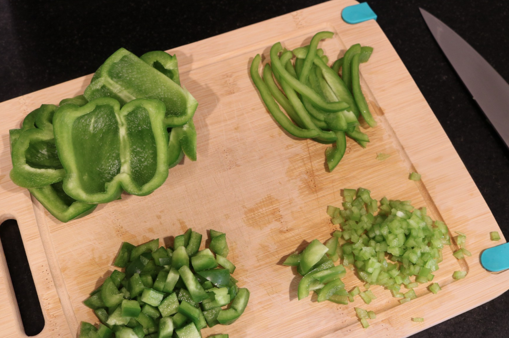

Recipe 1 : Chopped Cucumber and Tomato Salad

This salad is a great addition to many meals. It can be stored 1-2 days in the fridge. If you store the ingredients seperately refrigerated you could make 2 batches over 3 days for a fresher result
Ingredients:
| Cucumber |
| Tomato |
| Parsley |
| Shallot |
| Lemon Juice |
| Salt |
| Pepper |
Optional

-
TIPS: How to chop bell pepper
Creating a stable way to hold a vegetable with fingers safely away from the knife blade is the most important consideration when chopping. Hold knife so blade moves away from you. Hold food in place with curved fingers and thumb tucked back. It is helpful to rest the smooth side of the knife against your curved knuckles as a guide - the knife blade stays close to the board and your food and your fingers are projected.
Instruction:
- Wash Cucumber. If you would like the peel removed or some of the peel removed, peel or slice away some of the peel. Cut the cucumber into small cubes
- Wash the tomato. Slice the tomato and cut the slices into bite sized pieces
- Wash the parsley and remove the stems. Chop leaves
- Pull away the outer paper/layer of the shallot. Cut a small 1" piece off the shallot. Save the rest for another recipe by wrapping and storing in the refrigerator. Mince the shallot or chop into very small pieces.
- Juice the lemon. Slice the lemon in half. Using a fork, hold 1/2 of the lemon in one hand and pierce the cut side with a metal forkwith the other, over a bowl. Squeeze the lemon against the fork and twist to release the juice, catching in a bowl.
- Combine the cut vegetables in a bowl. Add the lemon juice and a little salt and pepper. If using oil, chopped garlic, or shredded mint leaves they can be added as well. Gentle mix the salad evenly.